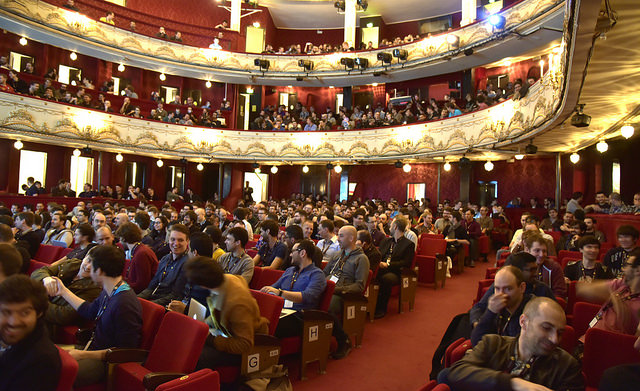
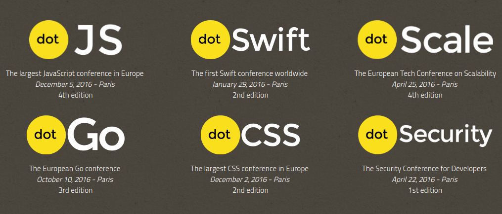
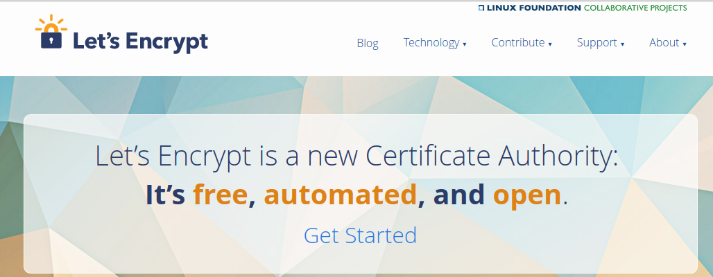

Created: 2016-05-26 Thu 11:18



Talk from Jacob Kaplan-Moss.
Every time you use sudo God kills a squirrel.
A web site administrator wants to allow content from a trusted domain and all its subdomains (it doesn't have to be the same domain that the CSP is set on.)
Content-Security-Policy: default-src 'self' *.trusted.com
A web site administrator wants to allow users of a web application to include images from any origin in their own content, but to restrict audio or video media to trusted providers, and all scripts only to a specific server that hosts trusted code.
Content-Security-Policy: default-src 'self'; img-src *; media-src media1.com media2.com; script-src userscripts.example.com
From the Head of Security at Docker.
From the creator of OpenBSD and OpenSSH
Hardware is like milk, you want it as fresh as possible. Software is like wine, it you want it aged.
MongoDB as universal information aggregator